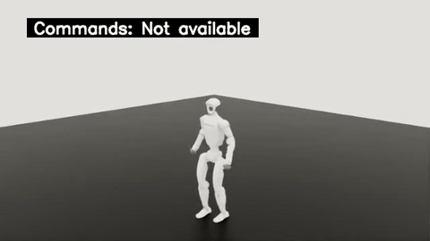
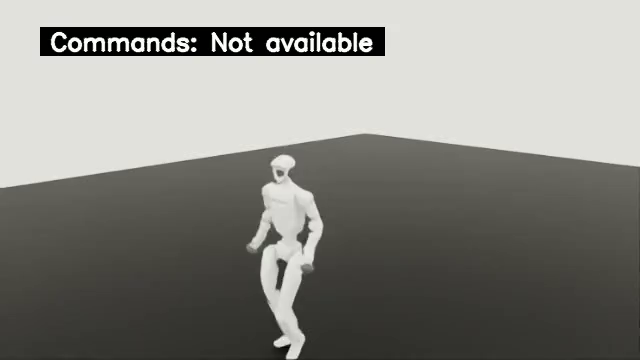
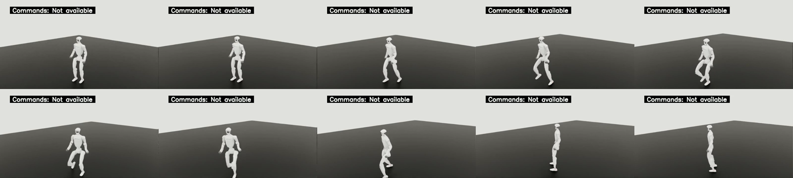

完整运动片段 9.78s
原 MP4 下载 · SHA256 bedc51955e5f861ad1ceef3babef6d3862940c192352bdb862b754eb973a5f95
teacher locomotion，seed42，单 source / 单 terrain variant / first attempt。原 source 490 帧、488 个连续 policy steps，failed reset 0、timeout reset 0；原轨迹到达 native boundary。
这是平地动作参考片段；完整 888 队列与障碍课程质量仍待终态验收。画面原叠字 Commands: Not available 保留，完成判定来自原始 trajectory。



原 MP4 下载 · SHA256 bedc51955e5f861ad1ceef3babef6d3862940c192352bdb862b754eb973a5f95
原 MP4 下载 · SHA256 39cf962a0cfeba1da4f85b6e8f534ad99ff7b6cc49e4615f495fb7ba8838d494
原 MP4 下载 · SHA256 4f218a441dde0aee45b398994e7c3dae876d14e2a207323967d8604ef395ed46